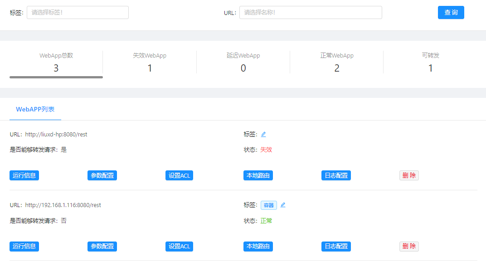

治理工具包 - rewin.ubsi.rest
UBSI的体系架构主要是面向中台的微服务层面，并不会限制微服务之上的前台应用开发框架的选择。对于一个典型的WebApp，前端可以是基于JS框架的SPA，也可以是移动APP或桌面APP；后端作为前端的接入服务层，主要用来提供rest服务接口及安全访问控制机制。
对于采用了SpringBoot框架开发的Web后端服务，可以引入UBSI WebApp治理工具包，这样在UBSI治理工具中可以做到对这些Web服务实例的发现及管理。

引入rewin.ubsi.rest
在SpringBoot项目的pom.xml中添加如下依赖：
<dependency>
<groupId>rewin.ubsi</groupId>
<artifactId>rewin.ubsi.rest</artifactId>
<version>2.3.0</version>
</dependency>
- rewin.ubsi.rest依赖的SprintBoot版本是2.6.6
- rewin.ubsi.rest已经依赖了rewin.ubsi.core，不必重复引入
添加启动代码
在应用入口的@SpringBootApplication注解中添加如下属性：
@SpringBootApplication( scanBasePackages = { "rewin.ubsi.rest", // 引入治理接口 "{your-packages}" }, exclude = { // 取消MongoDB/Jedis的自动配置 MongoAutoConfiguration.class, MongoDataAutoConfiguration.class, RedisAutoConfiguration.class, RedisRepositoriesAutoConfiguration.class } ) public class Application { public static void main(String[] args) throws Exception { SpringApplication.run(Application.class, args); } }在应用初始化时添加ubsi启动步骤：
@Component public class AppRunner implements ApplicationRunner { @Override public void run(ApplicationArguments args) throws Exception { // your start code rewin.ubsi.rest.Starter.startup("."); // 启动rewin.ubsi.rest，参数为配置文件所在目录 } }
添加运行时的配置文件
rewin.ubsi.consumer.json
rewin.ubsi.rest在启动时会自动加载UBSI Consumer组件，如果在配置文件rewin.ubsi.consumer.json中配置了redis，则会将自己作为一个WebApp的实例注册到redis注册中心，随后UBSI治理工具就可以自动发现这个WebApp，并通过rest组件提供的api对其进行配置管理。配置示例如下：
{ "io_threads": 4, "timeout_connect": 5, "timeout_request": 10, "timeout_reconnect": 600, "redis_host": "{redis-server-host}", "redis_port": 6379, "redis_conn_idle": 2, "redis_conn_max": 16, }
rewin.ubsi.rest.json
rewin.ubsi.rest在向redis注册时，需要声明自己的URL访问路径，这个路径应该配置在rewin.ubsi.rest.json文件中，示例如下：
{ "url": "http://{your-webapp-root-url}", "gateway": false }注：gateway表示是否允许Web服务直接转发UBSI服务请求
服务接口
rewin.ubsi.rest为Web服务提供了两组预置的服务接口，分别是：
/controller
用于UBSI治理工具对Web服务的运行实例进行监控，比如：
[GET] http://{your-webapp-root-url}/controller/info - 获得rewin.ubsi.rest的运行信息/request
用于转发UBSI服务请求，可以通过如下方式获得如何通过request body构造服务请求的帮助：
[POST] http://{your-webapp-root-url}/request?help